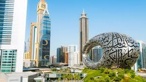
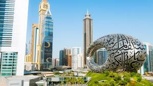

Explore the Beauty of the World
The places around the globe that draw the most tourists have a lot in common:
They are typically in urban centers and have broad cultural and historical appeal.
Our selection of the top attractions honors local heritage and cultural landmarks at major destinations
that have captured the world's imagination and inspired travelers to circle the globe for architectural marvels
and must-see destinations.
In the hustle and bustle of our daily lives, we often forget to pause and appreciate the beauty that surrounds us.
From the mesmerizing landscapes to the diverse cultures, our world is a treasure trove of wonders waiting to be explored. This article takes you on a journey to rediscover the enchanting beauty of our planet.
Image Gallery
 



Paris, France
Paris, the capital of France, is a city of romance and beauty. Paris lives up to its hype: A city with unbelievable food and culture, plus stunning views everywhere you turn. With 18 arrondissements, it’s a lot to see in one trip, but each neighbourhood has a personality all its own. You can’t miss the iconic 7th, where art and history meet—there’s the Eiffel Tower, sure, but the impressive Musée du quai Branly is just a short walk away.
London, United Kingdom
London’s a sprawling city at the centre of everything: art, history, culture—you name it. But what sets it apart from other major hubs are its distinct neighbourhoods, each with their own vibe. Spend an afternoon with the fam in Kensington: It’s got museums, parks, and plenty of other kid-approved things to do
Dubai, United Arab Emirates
Everything feels extra spectacular in Dubai—from the ultra-modern Burj Khalifa to the souks and malls filled with gold and jewellery vendors. It’s a place where if you can dream it, you can do it: Whether that means skiing indoors, dune-surfing in the desert, or zip-lining above the city. But it’s not all glitz and adrenaline-pumping action.